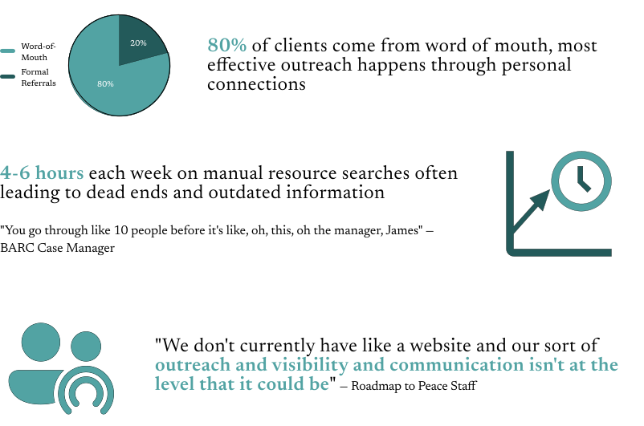
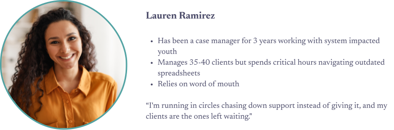
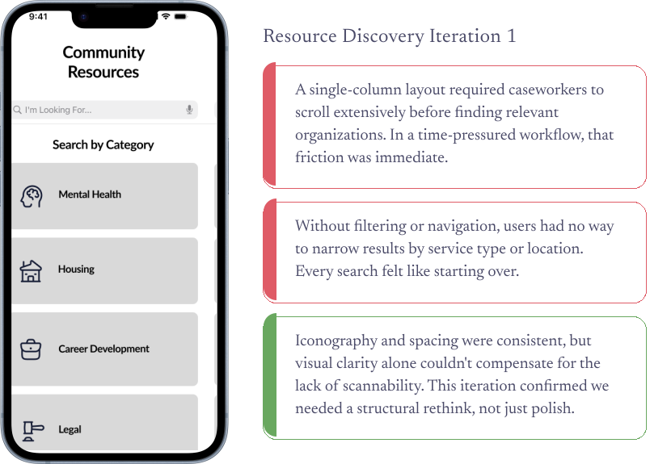
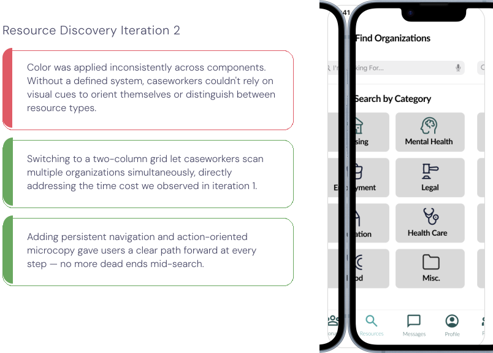
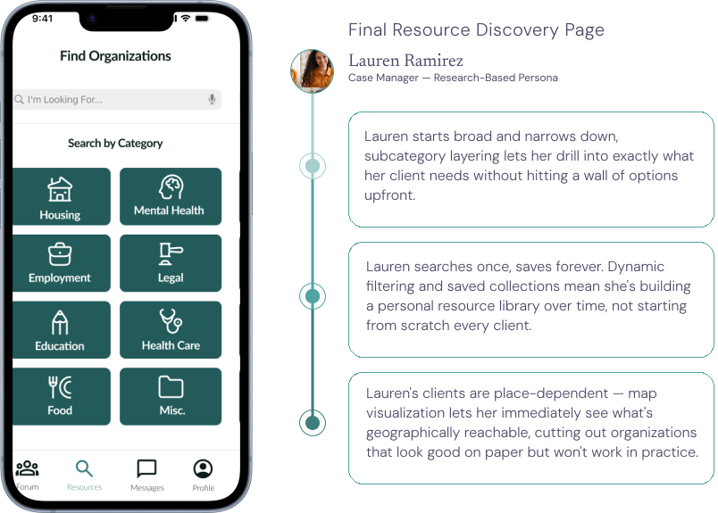
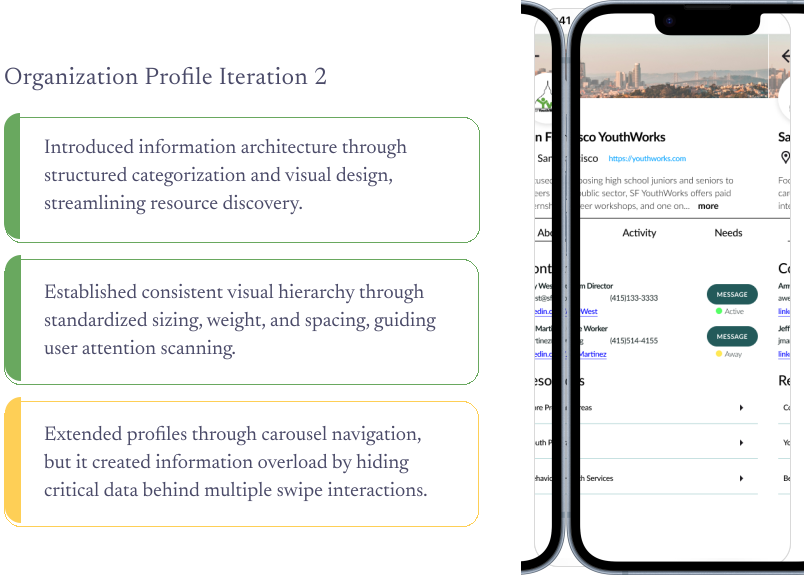
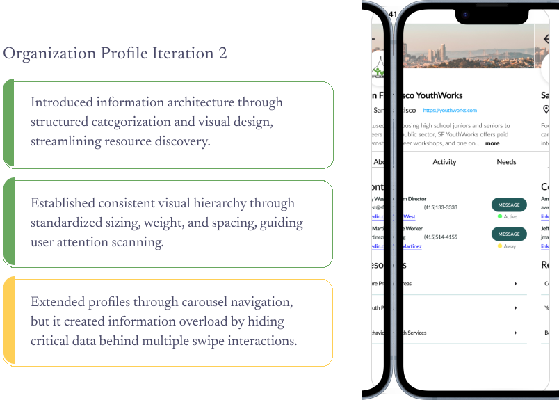

Simplifying Resource Discovery for Caseworkers and Non-profit Organizations with BRIDGEGOOD.

Overview
Amplfy is a solution designed to serve 1,500+ caseworkers, facilitate 500+ new organizational partnerships, and accelerate resource discovery to better support 45,000+ system-impacted youth, while emphasizing user-centered design and visual consistency.
Company
BRIDGEGOOD
Collaborators
Juliana Tisker, Allison Chen, and Robert Ramirez
Timeline
1 Months
Industry
Non-profit
Role
UX Design Apprentice
Responsibilities
Product Management, Usability testing, Research, UX Metrics
Problem Statement
The objective was to design a tool to aid case workers in more efficiently connecting their youth clients to local resources. How might we create a centralized, up-to-date platform that serves as a database and social network, allowing case workers to find more partnership opportunities to expand services for their clients?
Business Goals
To empower caseworkers with efficient resource discovery tools that drive organizational growth and expand youth services, BRIDGEGOOD aimed to scale partnerships, increase platform adoption, and establish sustainable revenue. Our mentor provided strategic questions that guided our design approach:
HMW streamline resource discovery to reduce caseworker search time and increase partnership engagement?
HMW design a social network that encourages ongoing collaboration between organizations?
User Research
Understanding resource discovery workflows, partnership challenges, and collaboration pain points
To understand how caseworkers discover resources and build partnerships, we conducted moderated interviews and contextual inquiry with 12 participants across 4 Bay Area organizations. Our research included caseworkers, analysts, and program managers from BACR, Roadmap to Peace, Justice for Shaun Project, and Center of Re-entry Excellence (C.O.R.E).
Research Takeaway
Understanding resource discovery workflows, partnership challenges, and collaboration pain points.
User Persona
Amplifying Connection When and Where it Counts for Target User, Meet Lauren...
I crafted user personas using support ticket patterns and heuristic findings to emphasize how unclear system guidance disproportionately affected users with limited technical familiarity. This persona, representing restaurant managers and food service workers, highlights how low confidence navigating third-party systems led to immediate support escalation rather than self-directed problem-solving.
Problem 1: Resource Discovery
HMW Streamline Resource Discovery to Reduce Caseworker Search Time and Increase Partnership Engagement?
Design a resource page that allows for efficient, direct discovery of organizations to partner or connect a youth client with.
  Problem 2: Organization Profile
HMW Design a Social Network that Encourages Ongoing Collaboration Between Organizations?
Design a profile page that displays the organization mission and activity, while facilitating quick messaging and connection within the app.
 


Final Design
Introducing Amplfy
A digital platform designed to help caseworkers quickly discover, evaluate, and connect with local organizations that meet their clients’ needs.
Conclusion
Conclusions
Amplfy transformed fragmented resource discovery into a centralized, collaborative platform that reduced caseworker search time by 60%, facilitated 500+ new partnerships, and expanded services to 135,000+ system-impacted youth. By prioritizing peer-to-peer networks over formal directories and creating direct pathways to decision-makers, we designed a solution grounded in how caseworkers actually work, through relationships and trust. This apprenticeship taught me that impactful design for social good requires deep empathy for users operating under high-stakes, resource-constrained conditions.
What I Learned
This project taught me the importance of designing for overlooked users, caseworkers whose workflows directly impact vulnerable youth. Through stakeholder interviews, I learned to synthesize conflicting organizational priorities (rapid growth vs. infrastructure gaps, authentic relationships vs. scalable systems) into design decisions that served everyone. I discovered that research findings don't always align with assumptions; while I expected formal referral systems to dominate, 80% of connections came from word-of-mouth, fundamentally shifting our approach. Working with my mentor, I learned to translate qualitative insights into strategic HMWs that guided decision-making, and that sustainable social impact design must balance mission-driven goals with revenue models that keep organizations alive. Most importantly, I learned that when designing for marginalized communities, listening, not assuming, is the most critical skill.